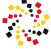

How can rich, visual analysis of structured data be made easier for a wide audience? My research focuses on many aspects of this question. My solutions become part of Keshif, a faceted data exploration tool, open source and built for the ubiquitous web.
 I am a member of Human Computer Interaction Lab (HCIL), and Teaching and Learning Transformation Center (TLTC, directed by my advisor Prof. Ben Bederson), where I work as a reseach assistant to explore data driven ways to improve teaching and learning.
Formerly, I worked on high performance visual computing using GPUs, multi-resolution terrain rendering, physical deformation simulation, and developed OpenREng (OpenRenderingEngine).